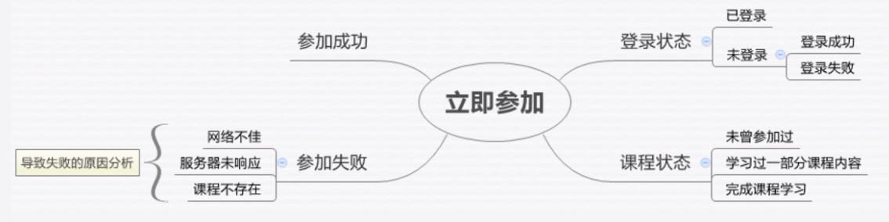

测试分析与设计
一、测试需求分析
A.测试需求分析概述
1.测试过程的生命周期
- 测试需求分析
- 测试设计
- 测试计划
- 测试执行
- 质量评估
2.测试需求分析过程
- 1）分析对象
- 2）分析方法、工具
- 3）分析结果
3.测试需求分析类型
- 1）功能
- 2）性能
- 3）兼容性
- 4）其他
B.功能测试需求分析方法
1.两个问题
- 1）功能测试，要测哪些内容？
- 2）需求文档->测试信息？
2.功能测试需求分析方法
- 1）了解需求范围
- 了解需求想要做什么
- 要完成哪些功能模块
- 2）明确目标用户
- 需求的目标用户是谁？
- 不同的用户角色，功能和权限是否一样？
- 3）分析功能步骤：要完成功能，用户需要哪些步骤？
- 列出所有可测试的功能
- 对每个功有点进行分层分析
- 功能点之间有哪些耦合关系？
- 有哪些可能的异常流程？
- 4）挖掘隐藏需求
- 了解需求整体架构
- 熟悉所有实现的细节
- 代入用户角色，实际场景中推测
3.异常情况经验谈
- 1）网络环境：网络中断、网络切换、丢包延迟
- 2）服务器资源：服务器无响应、响应慢、无法连接服务器
- 3）系统环境：被测系统文件缺失、PC或者手机系统缺少必要组件、权限不足
- 4）异常中断：断电、通话中断
4.思维导图

二、测试用例设计
A.测试用例概述
1.测试用例

2.测试用例的好处
- 1）开始：理清思路；避免遗漏
- 2）执行：跟踪测试进度
- 3）执行后：重复测试；历史参考
3.测试用例模板

4.需求分析->测试用例
B.测试用例设计方法
1.三个问题

2.等价类

3.边界值

4.等价类&边界值

5.因果图法


3.场景分析法

4.测试用例编写原则
- 预期唯一

- 描述清晰

- 可执行

- 优先级
- 易维护
C.测试用例优先级
1.为什么划分优先级
- 1）二八定律
- 2）bug发现时间与项目风险的关系
2.如何划分优先级
- P1，优先级高：核心功能；主干流程；正常流程
- P2，优先级中：一般功能；分支流程；异常流程
- P3，优先级低：界面文案；易用性；视觉表现
3.划分优先级
- 1）功能
- 2）影响
- 3）用例执行不通过的影响
- 用例执行不通过，将导致所有用户无法正常使用=P1
- 用例执行不通过，将导致部分用户在特定情况无法正常使用=P2
- 用例执行不通过，虽不影响用户使用但体验下降=P3
D.测试用例管理
1.测试用例特性
- 1）多次执行
- 不同的测试阶段，执行相同的测试用例
- 不同的测试人员，执行不同的测试用例
- 2）支持更新
- 需求变更 ，更新测试用例
- 新的测试点，更新测试用例
2.多人协作

- 1）同步测试用例
- 2）同步测试结果
3.怎么管理测试用例

三、测试计划编写
A.测试计划编写
1.测试计划
- 1）什么时候做
- 产品需求确认后
- 测试需求分析完成后
2.测试计划的内容
- 1）测试范围：测什么？
- 2）测试策略：怎么测？
- 3）资源安排 ：谁来测？测试环境？测试工具？
- 4）进度安排：什么时候测？测多久？
- 5）发布标准：怎样算测完？怎样可以发布？
- 6）风险预防：有哪些风险？如何预防？
3.进度安排
- 1）项目的里程碑
- 开发节点
- 提测节点
- 上线节点
- 2）评估因素
- 业务复杂度
- 测试复杂度
- 产品质量要求
- 人员数量能力
- 3）进度安排
- 评估工作量
- 分配人力
- 预估时间
- 4）输出文档
- 测试计划
- 测试用例
- bug数据
- 测试报告
4.发布标准，测试目标=完成标准
- 1）测试完成标准
- 完成所有测试类型
- 没有影响用户正常使用的bug
- Bug少于一定数量
- 服务端性能满足设计目标
- 2）产品发布标准
- 所有产品需求都已完成
- 交互视觉完成了走查
- 遗留bug经过风险评估
- 使用说明文档完备
5.风险评估
- 1）测试范围风险
- 测试遗漏
- 需求变更
- 2）测试进度风险
- 工作量预估不准确
- 耦合任务延迟
- 测试人员变动
- 3）产品质量风险
- 代码质量
- 测试人员能力
6.测试计划的作用
- 1）指导测试过程
- 2）协调项目安排
- 3）提高测试效率
- 4）提高测试质量
测试执行
一、测试基本流程
A.冒烟测试
1.测试基本流程

2.冒烟测试：在正式进入测试之前，先把待测试的主要功能检查一遍
3.冒烟测试的流程

4.选择冒烟用例
- 选择主干流程的正向用例（从P1、P2中选择）
- 每个模块都覆盖到
- 30% 20% 10%
- 跟回归用例的区别：目的不一样，老功能不用冒烟
5.判断冒烟通过：冒烟用例通过达100%
6.冒烟测试发现block的bug：后面的标记成忽略
7.冒烟测试的意义：
- 减少重复执行，提高测试效率
- 开发和测试就提测质量达成一致
8.邮件流转：冒烟用例邮件给开发->开发自测通过邮件->测试冒烟通过邮件
B.新需求测试与回归测试
1.执行第一轮新需求测试：
- 执行测试
- 报Bug
2.跟项目组同步测试：测试日报

3.新需求测试完成标准
- 新需求开发全部完成
- Bug收敛到一定标准：传统（无Major：重要分支，少数Normal：非重要分支）、敏捷（无Critical：主干功能出错，Bug收敛）
4.新需求测试要执行几轮：
- 理想情况是1轮
- 不理想的是：分步提测
5.回归测试：验证本体功能的正确性，包括本次改动和没有改动的功能
6.回归测试用例选择
- 项目新需求功能模块的相关模块：调用修改模块的、被修改模块调用的
- 产品全功能主干用例
- 版本兼容、系统兼容等兼容性用例
- 遗留Bug的相关用例
7.执行回归测试：测试日报
8.回归测试完成标准
- 开发完全停止后进行一轮回归测试
- 基本没有Bug：无Major、无Normal、Minor<5
9.回归测试要执行几轮
- 理想情况是1轮
- 不理想要多轮
10.回归测试自动化
C.Bug管理
1.Bug标题：简洁、具体

2.描述：
- 1）需要有详细的重现步骤
- 2）提供平台信息：操作系统、手机机型、手机版本、浏览器
- 3）最好有截图

3.严重级别
- Block：崩溃的、致命的，P1
- Critical：主干功能出错，P1
- Major：次要的功能出错或重要的分支出错，P1或P2
- Normal：非重要分支出错，P2
- Minor：样式、细节问题，P3
4.简化的Bug流程图

5.经典的Bug流程图

6.Bug分析：可以挖掘信息


7.线上Bug分析：非常慎重地对待线上Bug，项目组一起指定改进措施，杜绝再犯
D.质量报告
1.质量报告的内容

二、WEB功能测试
A.WEB问题定位
1.测试人员的工作

2.发现问题

3.Web调试工具

4.HTTP请求


5.分析日志4步

B.WEB兼容性测试
1.用例覆盖策略

2.测试时间点

3.css问题
- 文本：阴影、溢出
- 背景：背景大小
- 位置：居中
4.JS问题
- 函数和方法差异：如getYear
- 事件处理：XMLHttpRequest请求（IE6）
5.图片问题
- 压缩图片尺寸
- 图片色彩差异
三、APP功能测试
A.APP问题定位
1.分析问题

2.Charles代理服务器
3.夜神模拟器（默认adb端口62001）、genmotion模拟器（mac）
4.iOS用XCode或
5.adb工具：https://www.androiddevtools.cn/，SDK Tools和SDK Platform-Tools
B.APP兼容性测试
1.系统兼容性测试
- 紧跟iOS新版本操作系统，iOS系统小版本也会不断更新
- 关注Android新版本操作系统，系统小版本会时不时更新
- 优先测试主流系统
2.屏幕兼容性：关注主流分辨率


3.型号兼容性：优先测试主流设备品牌、考虑品牌的主流系列
4.用例选择：主干、大部分页面
5.测试时间点：

C.APP性能测试
1.性能测试

2.内存、CUP问题—程序卡顿、崩溃
- 内存：内存泄漏、内存溢出
- CPU：占用过高


3.Emmagee： https://github.com/NetEase/Emmagee/releases

4.帧率问题：渲染时间过长，页面丢帧卡顿


- 策略：每页遍历
- 工具：gfxinfo，手机设置->开发者工具->GPU呈现模式分析
- 超过绿色基线提交开发排查
5.流量问题：消耗过多，影响用户money

6.启动时间：过长，影响用户初体验


- adb logcat保存日志
- 过滤"Displayed"内容出来
- 根据开发的Activity名称来查找
- 相加时间
- 多试几次，网络可能会影响
Web自动化测试
一、自动化测试概述
A.什么是自动化测试
1.测试中自动化的应用

二、Selenium基础
三、Selenium进阶
四、Web自动化实战
五、接口测试入门
移动自动化测试
性能测试